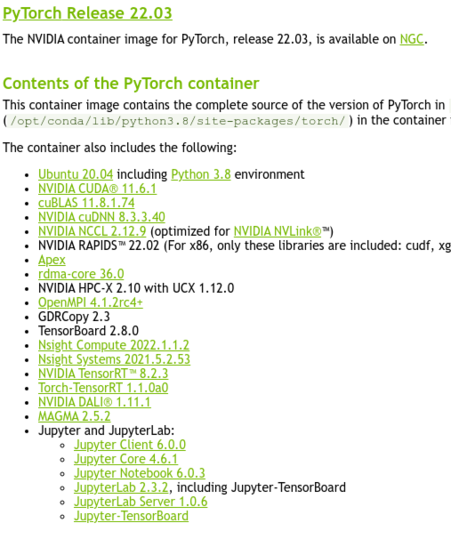

NVIDIA Deep Learning Frameworks
Here is how easy one can use an NVIDIA environment for deep learning with all the following tools preset.

First, Let's pull the container (6.5GB).
singularity pull docker://nvcr.io/nvidia/pytorch:22.03-py3
When done, get an interactive shell.
singularity shell --nv ~/external_1TB/tmp/pytorch_22.03-py3.sif
Singularity> python3
Python 3.8.12 | packaged by conda-forge | (default, Jan 30 2022, 23:42:07)
[GCC 9.4.0] on linux
Type "help", "copyright", "credits" or "license" for more information.
>>> import torch
# Check torch version
>>> print(torch.__version__)
1.12.0a0+2c916ef
# Check if CUDA is available
>>> print(torch.cuda.is_available())
True
# Check which GPU architectures are supported
>>> print(torch.cuda.get_arch_list())
['sm_52', 'sm_60', 'sm_61', 'sm_70', 'sm_75', 'sm_80', 'sm_86', 'compute_86']
# test torch
>>> torch.zeros(1).to('cuda')
tensor([0.], device='cuda:0')
From the container shell, check what else is available...
Singularity> nvcc -V
nvcc: NVIDIA (R) Cuda compiler driver
Copyright (c) 2005-2022 NVIDIA Corporation
Built on Thu_Feb_10_18:23:41_PST_2022
Cuda compilation tools, release 11.6, V11.6.112
Build cuda_11.6.r11.6/compiler.30978841_0
# Check what conda packages are already there
Singularity> conda list -v
# Start a jupyter-lab (keep in mind the hostname)
Singularity> jupyter-lab
...
[I 13:35:46.270 LabApp] [jupyter_nbextensions_configurator] enabled 0.4.1
[I 13:35:46.611 LabApp] jupyter_tensorboard extension loaded.
[I 13:35:46.615 LabApp] JupyterLab extension loaded from /opt/conda/lib/python3.8/site-packages/jupyterlab
[I 13:35:46.615 LabApp] JupyterLab application directory is /opt/conda/share/jupyter/lab
[I 13:35:46.616 LabApp] [Jupytext Server Extension] NotebookApp.contents_manager_class is (a subclass of) jupytext.TextFileContentsManager already - OK
[I 13:35:46.616 LabApp] Serving notebooks from local directory: /home/pmitev
[I 13:35:46.616 LabApp] Jupyter Notebook 6.4.8 is running at:
[I 13:35:46.616 LabApp] http://hostname:8888/?token=d6e865a937e527ff5bbccfb3f150480b76566f47eb3808b1
[I 13:35:46.616 LabApp] Use Control-C to stop this server and shut down all kernels (twice to skip confirmation).
...
You can use this container to add more packages.
Bootstrap: docker
From: nvcr.io/nvidia/pytorch:22.03-py3
...
torch package might install a package that is compatible with less GPU architectures and it might not work anymore on your hardware.
Singularity> python3 -c "import torch; print(torch.__version__); print(torch.cuda.is_available()); print(torch.cuda.get_arch_list()); torch.zeros(1).to('cuda')"
1.10.0+cu102
True
['sm_37', 'sm_50', 'sm_60', 'sm_70']
NVIDIA A100-PCIE-40GB with CUDA capability sm_80 is not compatible with the current PyTorch installation.
The current PyTorch install supports CUDA capabilities sm_37 sm_50 sm_60 sm_70.